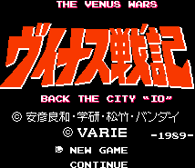

Venus Wars - Nintendo Games

- Company: Varie
- Date Released: 1989
- Genre: Strategy game/Action game
From Gabriel Jarero:
You advance your players toward the enemies and attack them like any other strategy game. The twist comes in when
you actually engage the enemy. When you do, your player is shown is semi first person perspective. In the first
person perspective, you are riding your monocycle. As the enemies approach you, you have to destroy them using your
monocycles weapon. The enemies can also fire at you. Left and right allow you do maneuver around the playing field
and pressing up and the fire button allows you to aim up so that you can shoot at the aircraft. If you are not killed by the
enemiesor kill all of them then at the end of a minute, you are returned to the strategy board. Your personnel carriers
can also attack the enemies but that portion is not interactive.
Anime Video Game Resource Center © 1998 by Luis A. Cruz